- Ochiul uman normal poate distinge detalii care corespund unui unghi minim de aproximativ 1'.
- Distanţa minimă de vedere clară, pentru ochiul normal al unui adult, este 0,25 m.
- Un adult cu vedere normală nu poate vedea detalii mai mici de aproximativ 70 µm.
- Înţelegem ceva în măsura în care ştim dinainte ce se va petrece într−o anumită situaţie şi de ce.
- Controlăm ceva în măsura în care putem aranja ca lucrurile să se desfăşoare aşa cum dorim.
- Limitările văzului pot fi depăşite înţelegând şi controlând lumina.
- Reflexia luminii este fenomenul de "ricoşare" a acesteia pe suprafaţa de separaţie dintre două medii (schimbarea direcţiei şi întoarcerea în mediul
din care soseşte).
- Refracţia luminii este fenomentul de modificare a direcţiei luminii la trecerea prin suprafaţa de separaţie dintre două medii.
- Raza de lumină este reprezentarea simplificată a unui fascicul de lumină ca având lărgimea neglijabilă.
- Raza incidentă este raza care indică direcţia şi sensul trecerii luminii, înainte de a întâlni suprafaţa de separaţie dintre două medii.
- Unghiul de incidenţă este unghiul dintre raza incidentă şi normala la suprafaţa de separaţie dintre două medii, în punctul de incidenţă.
- Raza reflectată are direcţia şi sensul de lumină după reflexie.
- Unghiul de reflexie este unghiul dintre raza reflectată şi normala la suprafaţa de separaţie dintre două medii, în punctul de incidenţă.
- Raza refractată are direcţia şi sensul raxei de lumină după refracţie.
- Unghiul de refracţie este unghiul dintre raza refractată şi normala la suprafaţa de separaţie dintre două medii, în punctul de incidenţă.
- Legile reflexiei luminii:
Prima lege a reflexiei: Raza incidentă, normala la suprafaţă în punctul de incidenţă şi raza reflectată sunt în acelaşi plan.
A doua lege a reflexiei: Măsura unghiului de incidenţă este egală cu măsura unghiului de reflexie:
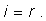
- Legile refracţiei luminii:
Prima lege a refracţiei: Raza incidentă, normala la suprafaţă în punctul de incidenţă şi raza refractată sunt în acelaşi plan.
A doua lege a refracţiei (legea lui Snell): Sinusul unghiului de incidenţă este direct proporţional cu sinusul unghiului de refracţie:
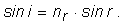
Coeficientul de proporţionalitate nr este indicele de refracţie relativ al celor două medii.
- Indicele de refracţie al unui mediu este indicele de refracţie relativ la vid al acelui mediu.
Indicele de refracţie al vidului este exact 1, iar indicele de refracţie al aerului este, rotunjit la primele trei zecimale, 1,000.
- Raportul indicilor de refracţie ai două medii este indicele de refracţie relativ al celor două medii:
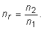
- Imaginea reală a unui punct al unui obiet oarecare este punctul din care un fascicul de lumină, provenit de la punctul obiectului, porneşte ca
fascicul divergent.
- Imaginea virtuală a unui punct al unui obiect este punctul din care pare să pornească un fascicul divergent de lumină, provenit
de la acel punct al obiectului.
Imaginile virtuale se formeaza la intersecţia prelungirilor razelor fasciculului divergent de lumină.
- O suprafaţă plană, pe care se reflectă lumina de la un obiect, formează o imagine virtuală a obiectului.
Fiecărui punct al obiectului îi corespunde un punct al imaginii, simetric faţă de suprafaţa reflectătoare.
- Imaginea într−o oglindă plană nu este inversată stângă−dreapta, nici sus−jos, ci doar faţă−spate.
- * Traseul pe care se propagă lumina este acela pentru care traseele imediat învecinate acestuia necesită aproape acelaşi timp pentru parcurgere.
- * Reflexia totală este fenomenul de reflexie a luminii, neînsoţit de refracţie, la suprafaţa de separaţie cu un alt mediu, având indicele de refracţie
mai mic.
- * Unghiul de incidenţă limită, de la care reflexia devine totală, este cel pentru care unghiul de refracţie devine 900:
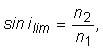
unde n2 < n1.
- * Prisma optică este un corp având forma unei prisme, realizat dintr−un material cu bune calităţi optice (omogenitate, transparenţă), cu feţele
şlefuite cât mai aproape de idealul unor feţe plane.
- * Deviaţia luminii produsă de o prismă optică este minimă când parcursul luminii prin prismă este simetric.
- * Pentru o prismă de unghi A, realizată dintr−un material cu indice de refracţie n2, aflată într−un mediu cu
indice de refracţie n1, la deviaţia minimă dmin există relaţia:
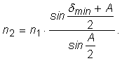
- * Condiţia de emergenţă a luminii din prismă, în condiţii de deviaţie minimă, este ca unghiul A al prismei să fie mai mic decât dublul unghiului
limită l pentru reflexie totală:
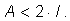
- Lentilele sunt corpuri transparente, având cel puţin o suprafaţă curbă.
- O lentilă subţire are grosimea, pe direcţia trecerii luminii, mult mai mică decât propria deschidere.
- Axa optică principală a unei lentile este axa care trece prin centrele de curbură ale lentilei.
- O lentilă convergentă transformă un fascicul paralel de lumină într−unul convergent.
- Focarul imagine al unei lentile este punctul în care se formează imaginea unui punct aflat foarte departe de lentilă.
- Distanţa focală imagine a unei lentile este distanţa dintre lentilă şi focarul imagine al lentilei.
- O rază de lumină paralelă cu axa optică principală a unei lentile este deviată prin focarul imagine al lentilei.
- Lumina trece prin centrul unei lentile subţiri aproape nedeviată.
- Convergenţa unei lentile este inversul distanţei focale a lentilei.
- Dioptria este convergenţa de 1 m-1.
- Lentilele convergente au convergenţa pozitivă.
- Formula lentilelor:
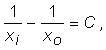
unde xo este coordonata obiectului faţă de lentilă, xi este coordonata imaginii faţă de lentilă, iar C
este convergenţa lentilei.
Axa x este în lungul axei centrale a lentilei, sensul fiind cel al propagării luminii.
- Lupa este o lentilă convergentă cu convergenţă mare.
- Grosismentul unui sistem optic este factorul de mărire al tangentei unghiului sub care este văzut obiectul, utilizând acel instrument:
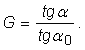
- Grosismentul unei lupe cu convergenţa C este:
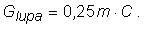
- O lentilă divergentă măreşte divergenţa unui fascicul.
Lentilele divergente au divergenţa negativă.
- Lentilele divergente formează imagini virtuale ale obiectelor, indiferent la ce distanţă se află acestea faţă de lentilă.
- Obiectivul unui instrument optic este partea instrumentului îndreptată către obiectul vizat.
- Ocularul unui instrument optic este partea acestuia, îndreptată înspre ochiul celui care utilizează instrumentul.
- Obiectivul unei lunete este o lentilă convergentă, cu convergenţă mică. Acesta formează o imagine reală, răsturnată şi micşorată.
Ocularul lunetei astronomice are rol de lupă.
- Grosimsentul lunetei astronomice (Kepler) este:
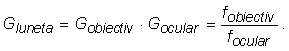
- Într−un sistem de lentile, imaginea formată de o lentilă devine obiect pentru următoarea.
- Un sistem de lentile acolate (lipite) are convergenţa egală cu suma algebrică a convergenţelor lentilelor care alcătuiesc sistemul.
- Ochiul uman este un receptor de lumină de formă aproximativ sferică, având diametrul aproximativ 2,3 cm.
- Din punct de vedere optic, ochiul este un sistem convergent, având convergenţa variabilă.
- În stare relaxată, convergenţa ochiului este minimă (aproximativ 59 dioptrii).
Convergenţa maximă a ochiului normal al unei persoane de 15 ani este 71,5 dioptrii.
Convergenţa maximă scade odată cu înaintarea în vârstă.
- Ochiul formează pe retină o imagine reală şi răsturnată.
Pe retină există celule sensibile la lumină (conurile şi bastonaşele), având fiecare diametrul aproximativ 4,5 µm.
- Hipermetropia este deficienţa ochiului în care imaginea unui obiect îndepărtat se formează în spatele retinei, când ochiul este relaxat.
- Hipermetropia se corectează cu lentile având convergenţa pozitivă.
- Miopia este deficienţa ochiului în care imaginea unui obiect îndepărtat se formează în faţa retinei, când ochiul este relaxat.
- Miopia se corectează cu lentile având convergenţa negativă.
- Aparatul fotografic este un instrument optic convergent, care formează imagini reale pe o suprafaţă sensibilă la lumină.
- * Claritatea imaginii fotografice se obţine prin operaţia de punere la punct (reglarea distanţei dintre obiectivul aparatului şi suprafaţa sensibilă
la lumină.
- * Transformările suprafeţei sensibile la lumină pot fi ireversibile (ca în cazul filmului fotografic), sau temporare (ca în cazul senzorilor electronici
de lumină).
- * Filmul fotografic necesită operaţiile de developare, fixare şi pozitivare pentru a se obţine, pe hârtia fotografică, imaginea finală, pozitivă.
- Microscopul este un instrument optic care formează imagini mult mărite ale obiectelor de mici dimensiuni.
- Obiectivul unui microscop este o lentilă convergentă cu convergenţă mare, care formează o imagine reală, răsturnată şi mărită a obiectului.
Ocularul microscopului are rol de lupă.
- Grosismentul microscopului este:
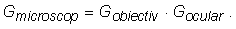
- * Pentru un microscop având lungimea tubului L, grosismentul este:
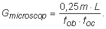